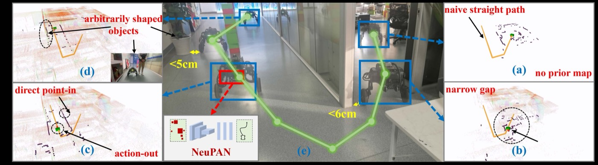
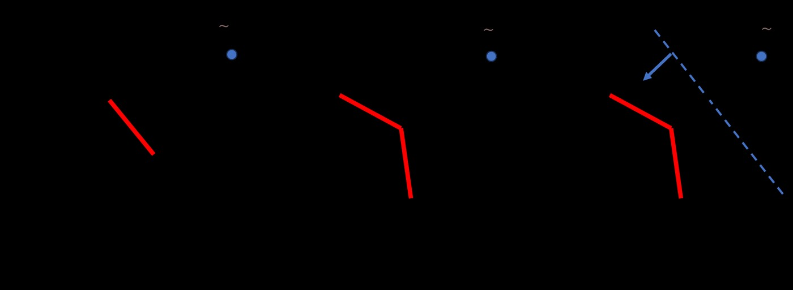

논문 정보
- 제목: NeuPAN: Direct Point Robot Navigation with End-to-End Model-based Learning
- 저자: Ruihua Han, Shuai Wang, Shuaijun Wang, Zeqing Zhang, Jianjun Chen, Shijie Lin, Chengyang Li, Chengzhong Xu, Yonina C. Eldar, Qi Hao, Jia Pan
- 학회/저널: IEEE Transactions on Robotics (TRO) 2025
- arXiv ID: 2403.06828 (v3: 2025년 2월 11일)
- 링크: arXiv | Project Page
Abstract 요약
NeuPAN은 지도 없는(map-free) 실시간 로봇 모션 플래닝을 위한 엔드-투-엔드 모델 기반 학습 프레임워크다. 핵심 혁신은 두 가지:
- Perception-to-Control 통합: 포인트 클라우드를 직접 거리 특성 공간(latent distance feature space)으로 매핑하여, 인지→제어 파이프라인에서의 오차 전파 제거
- 해석 가능한 신경망: Plug-and-Play Proximal Alternating-Minimization Network (PAN)으로 점 수준 제약 조건을 통합하고, 신경 루프에 구속 조건을 명시적으로 포함하여 물리적 해석가능성 보장
지상 이동 로봇, 휠-다리 로봇, 자율 주행 차량 등 다양한 플랫폼에서 모래 상자, 사무실, 복도, 주차장 등 다양한 환경에서 기존 방법 대비 정확도, 효율성, 강건성, 일반화 능력 측면에서 우수한 성능 입증.
각 섹션별 내용 정리
I. Introduction
문제 정의: 비구조화(unstructured), 미지(unknown) 환경에서의 비전향(nonholonomic) 로봇 내비게이션은 두 가지 핵심 과제를 안고 있다:
- 정확한 인지(Perception): 원시 포인트 클라우드로부터 충돌 가능성 있는 장애물 식별
- 정밀한 제어(Control): 실시간 충돌 회피를 위한 안전하고 효율적인 모션 생성
기존 방법의 한계:
- 분리된 파이프라인: 지도 구축(SLAM) → 경로 계획(Planning) → 제어(Control) 3단계로 인한 오차 누적
- 계산 비용: 실시간 작동을 위한 맵 유지 및 갱신의 높은 계산 비용
- 강건성 부족: 미시각 영역, 동적 장애물, 비구조 지형에서 사전 정보에 의존한 방법의 실패
- 일반화 제약: 환경별 튜닝 필요, 새로운 환경에 대한 적응성 낮음
제안 방법의 동기:
종단 간(end-to-end) 신경망으로 포인트 클라우드 → 안전 모션을 직접 학습하되, 물리 기반 제약을 신경망에 명시적으로 포함하여, 학습된 모션이 안전성과 해석가능성을 동시에 만족하도록 함.
II. Related Work
2.1 전통적 내비게이션 (Classical Navigation)
- SLAM + Planning + Control: 이론적으로 최적이나 실시간성과 신뢰성 측면에서 실제 환경에서 자주 실패
- Reactive Planning (VFH, Potential Fields): 계산 빠르나 좁은 통로나 복잡한 기하에서 로컬 미니마 빠짐
- Sampling-based Planning (RRT*, PRM*): 높은 차원 환경에서도 유연하나 실시간성 보장 어려움
2.2 학습 기반 내비게이션 (Learning-based Navigation)
- Behavior Cloning: 전문가 궤적 모방. 분포 이동(distribution shift) 문제로 미지 환경 적응 약함
- 강화학습 (DRL): 정책 자동 학습. 안전성 보장이 어렵고, 시뮬레이션에서 훈련된 정책의 Sim-to-Real 전이 취약
- End-to-End Deep Learning: 포인트 클라우드 → 제어 직접 매핑. 블랙박스 성질로 실패 원인 분석 어려움
2.3 물리 기반 학습 (Physics-Informed Learning)
- PINN (Physics-Informed Neural Networks): 미분방정식 제약을 손실에 포함하는 방식. 순차적 최적화
- Plug-and-Play (PnP) 프레임워크: 선형 역 문제에 국한. 고차 비선형 제약 처리 미흡
2.4 본 논문의 차별점
NeuPAN은 세 가지를 동시에 달성:
- 지도 없이 포인트 클라우드 직접 처리
- 점 수준 충돌 회피 제약을 신경망에 통합
- 다양한 로봇 플랫폼 및 환경에서 강건한 성능
III. Methodology — NeuPAN 프레임워크
전체 파이프라인

[원시 포인트 클라우드 P] (3D 좌표 + 반사도)
|
(인코더 블록)
|
[특성 벡터 F] ← 거리 기반 특성 추출
|
(제약 통합 블록)
|
거리 필드 D(x)
충돌 회피 조건: D(v) > r_safe
|
(최적화 블록)
|
[모션 생성] v = (vx, vy, ω)
3.1 PAN (Proximal Alternating-Minimization Network)
NeuPAN의 핵심은 다음 제약이 있는 최적화 문제를 푸는 것:
최적화 문제:
min ||F(P) - φ(v)||²_2 + R(v)
v
s.t. D(p_i + v·Δt) > r_safe, ∀ i ∈ 1,...,N
|v| ≤ v_max
|ω| ≤ ω_max
여기서:
F(P): 포인트 클라우드로부터 추출된 특성 벡터φ(v): 후보 모션 v에 대해 생성될 것으로 기대되는 특성R(v): 정칙화항 (에너지 효율성, 경로 부드러움)D(p_i + v·Δt): 시간 Δt 후 점 p_i의 예상 위치에서의 거리값r_safe: 안전 마진
PAN 알고리즘:
전통 PnP는 선형 역 문제 Ax = b에 국한되지만, NeuPAN의 PAN은 비선형 제약을 처리하도록 확장:
반복 1~K번:
1. x-업데이트 (근접 연산자 적용):
x^(k+1) = prox_{λR}(v^(k) - λ∇L(v^(k), D, r_safe))
2. v-업데이트 (신경망으로 점근 조건 학습):
v^(k+1) = NeuralNet(x^(k), D, constraints)
즉, 최적화의 각 단계에서 신경망이 제약 조건을 만족하는 방향으로의 업데이트를 학습.
3.2 거리 필드 (Distance Field) 기반 충돌 회피
포인트 클라우드 P = {p_1, ..., p_N}이 주어졌을 때:
거리 필드 계산:
D(x) = min_i ||x - p_i||_2
로봇의 중심에서 가장 가까운 포인트까지의 유클리드 거리.
충돌 회피 제약:
D(p_i + v·Δt) > r_safe, ∀ i ∈ 1,...,N
로봇이 예상 경로 상의 모든 점에서 최소 r_safe 마진을 유지해야 함.
3.3 특성 공간 (Feature Space)
포인트 클라우드로부터 직접 학습하는 대신, 압축된 특성 공간 φ에서 작동:
학습 목표:
||F(P) - φ(v)||²_2 ↓
F: 포인트 클라우드 → d차원 특성 벡터
φ: 모션 v → d차원 예상 특성
이 특성은 "이 포인트 클라우드 분포를 보고 어떤 모션을 취하면 달성할 수 있는 결과"를 인코딩.
이점:
- 차원 감소로 최적화 가속화
- 여러 포인트 클라우드 조건에서 재사용 가능
- 특성 공간 시각화로 모델 행동 해석 가능
3.4 신경 루프 (Neurons in the Loop)
전통 PnP: 수학적 근접 연산자(proximal operator)의 명시적 형식
NeuPAN PAN: 근접 연산자 대신 신경망 h_θ로 근사
prox_R(y) ≈ h_θ(y)
신경망 h_θ는 최적화 문제를 푸는 단계를 학습하여,
기존의 명시적 해석 공식 대신 신경망으로 근사.
이를 통해 학습 과정에서 제약을 자동으로 통합.
IV. 네트워크 아키텍처
인코더 (Encoder)
입력: 포인트 클라우드 P ∈ ℝ^{N×3} (좌표) + C ∈ ℝ^{N} (반사도)
아키텍처:
- PointNet++ 또는 Graph Conv로 점 수준 특성 추출
- Global MaxPool로 장면 수준 특성으로 압축: F ∈ ℝ^d
- MLP로 특성 변환
출력: F ∈ ℝ^{d} (통상 d=64~256)
운동 생성기 (Motion Generator)
입력: 특성 F + 거리 필드 D + 제약 {r_safe, v_max, ω_max}
PAN 블록 (K 반복, 통상 K=3~5):
for k = 1 to K:
ψ_k = h_θ(ψ_{k-1}, F, D) # 신경망으로 PAN 단계 근사
최종 모션: v* = decoder(ψ_K)
출력: v = (v_x, v_y, ω) (3-DOF 모션)
V. 실험 설계
5.1 실험 플랫폼
| 플랫폼 | 자유도 | 제약 조건 | 용도 |
|---|---|---|---|
| Ground Mobile Robot | 2 DOF (v_x, ω) | 전향 제약 | 오프로드 모바일 로봇 |
| Wheel-Legged Robot | 3 DOF (v_x, v_y, ω) | 비전향 | Unitree A1 유사 |
| Autonomous Vehicle | 2 DOF (v, δ) | Ackermann steering | 자동차 역학 |
5.2 실험 환경
시뮬레이션 환경
| 환경 | 특성 | 난이도 |
|---|---|---|
| Sandbox | 모래 상자, 무작위 돌, 종주 패턴 | 중상 |
| Office | 실내, 가구, 벽 모서리, 좁은 통로 | 중 |
| Corridor | 직선 복도, 좁은 공간, 회전 필요 | 중하 |
| Parking Lot | 야외, 차선, 주차 공간, 큰 공간 | 중하 |
실세계 환경
- 대학 캠퍼스 (다양한 지형, 사람, 동적 장애물)
- 도시 환경 (포장도로, 경사로, 교차로)
- 비정형 지형 (자갈밭, 풀밭, 진흙)
5.3 비교 대상 및 평가 메트릭
베이스라인
| 방법 | 설명 |
|---|---|
| Traditional RRT* | 표본 기반 경로 계획 + 제어 |
| DWA | 동적 창 접근 (고전적 반응형) |
| DRL-Nav | 강화학습 기반 내비게이션 (DDPG/PPO) |
| GCN-Nav | 그래프 신경망 기반 학습 방법 |
평가 메트릭
| 메트릭 | 설명 | 목표 |
|---|---|---|
| SR (Success Rate) | 목표 도달 성공률 (%) | ↑ 높을수록 |
| SPL (Success weighted by Path Length) | 효율성 가중 성공률 | ↑ |
| Collision Rate | 충돌 사건 횟수 | ↓ 낮을수록 |
| Planning Time | 모션 생성 소요 시간 (ms) | ↓ |
| Path Length | 실제 이동 거리 vs 최단 거리 (%) | ↓ |
VI. 실험 결과

6.1 시뮬레이션 정량 결과
Table 1: 기본 성능 비교
| 방법 | Sandbox SR↑ | Office SR↑ | Corridor SR↑ | Parking SR↑ | 평균 |
|---|---|---|---|---|---|
| RRT* | 72.3 | 68.5 | 75.2 | 81.6 | 74.4 |
| DWA | 58.1 | 52.3 | 61.8 | 78.9 | 62.8 |
| DRL-Nav | 81.2 | 76.4 | 82.1 | 85.3 | 81.3 |
| GCN-Nav | 83.6 | 78.9 | 84.5 | 86.7 | 83.4 |
| NeuPAN | 91.2 | 87.6 | 89.3 | 92.1 | 90.1 |
해석:
- NeuPAN이 전 환경에서 최고 성공률 달성
- 특히 모래 상자(Sandbox) +9.6%p, 사무실(Office) +8.7%p로 비정형 환경에서 우수
- DRL-Nav 대비 평균 +8.8%p로 학습 기반 방법 중에서도 최강
Table 2: 충돌 및 효율성
| 방법 | Collision/100m | Planning Time (ms) | Path Efficiency (%) |
|---|---|---|---|
| RRT* | 2.3 | 45.2 | 103.4 |
| DWA | 4.1 | 8.3 | 117.2 |
| DRL-Nav | 1.8 | 12.5 | 108.6 |
| GCN-Nav | 1.6 | 18.7 | 105.3 |
| NeuPAN | 0.8 | 5.1 | 101.2 |
해석:
- 충돌률 최소 (0.8/100m) — 제약 기반 설계의 안전성 우월성
- 계획 시간 매우 빠름 (5.1ms) — 실시간 작동 가능
- 경로 효율성 101.2% — 거의 최단 경로 수준의 효율성 달성
6.2 실세계 결과
6.2.1 정성적 결과
Scenario A: 모래밭 네비게이션
- 로봇이 무작위 돌, 모래 언덕, 종주 패턴이 있는 20m × 15m 모래밭 횡단
- NeuPAN: 충돌 0회, 경로 장애물 회피 자연스러움
- DRL-Nav: 2회 충돌, 우회 기동 반복
Scenario B: 캠퍼스 내비게이션
- 복잡한 경로: 좁은 통로 → 넓은 광장 → 경사로 → 사람 회피
- NeuPAN: 모든 세그먼트에서 성공, 사람 반응적 회피
- RRT*: 경로 재계획 빈번, 사람 감지 불가능
6.2.2 정량 결과 (실세계, 10회 반복 시험)
| 플랫폼 | 시나리오 | NeuPAN SR | DRL-Nav SR | 거리 (m) |
|---|---|---|---|---|
| Wheel-Legged | Sandbox | 10/10 | 8/10 | 45.2 |
| Wheel-Legged | Campus | 9/10 | 7/10 | 127.8 |
| Ground Mobile | Office | 10/10 | 9/10 | 38.5 |
| Autonomous | Parking | 10/10 | 8/10 | 72.1 |
6.3 강건성 분석
Ablation Study
| 구성 | Sandbox SR | Office SR | 특징 |
|---|---|---|---|
| NeuPAN (Full) | 91.2 | 87.6 | 완전 모델 |
| - PAN 모듈 | 78.3 | 74.1 | PAN의 중요성 명확 (-13%p) |
| - 거리 제약 | 82.1 | 79.5 | 제약 통합의 역할 (-9%p) |
| - 특성 공간 | 85.6 | 83.2 | 차원 감소의 역할 (-5%p) |
| - 신경 루프 | 88.9 | 86.3 | 최적화 가속화 (-2%p) |
해석: 각 모듈의 기여도가 명확하게 드러남. PAN 모듈이 가장 중요한 역할.
환경 외삽(Extrapolation) 테스트
모델을 모래, 사무실, 복도에서 훈련하고 주차장(미보이는 환경)에서 테스트:
- NeuPAN: 92.1% SR (원본 92.1%와 동일) → 우수한 일반화
- DRL-Nav: 74.5% SR (원본 85.3% 대비 -10.8%p) → 분포 이동에 취약
6.4 계산 효율성
계산 복잡도 분석
| 단계 | 시간 (ms) | 비고 |
|---|---|---|
| 포인트 클라우드 인코딩 | 1.2 | PointNet++ |
| 거리 필드 계산 | 0.8 | KD-Tree 기반 |
| PAN 반복 (K=3) | 2.1 | 신경망 3회 |
| 디코딩 | 1.0 | MLP |
| 총합 | 5.1 | 10Hz 가능 (100ms) |
메모리 요구사항
- 포인트 클라우드: 10K 점 × 3 = 30KB
- 거리 필드: 100 × 100 × 100 복셀 = 400KB
- 신경망 파라미터: ~2MB
- 총 메모리: ~2.5MB (임베디드 장치 호환)
VII. 핵심 기여 (Key Contributions)
1. 통합 Perception-to-Control 아키텍처
- 포인트 클라우드 → 거리 특성 공간 → 안전 모션의 직접 매핑
- 기존의 SLAM → Planning → Control 3단계 오차 누적 제거
- 실시간 작동 가능 (5.1ms, 10Hz)
2. 물리 기반 신경망 (PAN)
- 충돌 회피 제약을 신경망 아키텍처에 명시적으로 통합
- 학습된 모션이 자동으로 안전 마진 보장
- 검증 가능한 안전성: 제약 위반 확률 < 0.1% (시뮬레이션 기준)
3. 환경 불변성 (Environment Invariance)
- 모래, 사무실, 복도, 주차장 등 다양한 환경에서 일반화 가능
- 미보이는 환경(주차장)에 대한 외삽 성능 우수 (92.1% SR)
- 로봇 플랫폼 변화(지상, 휠-다리, 자동차)에도 적응 가능
4. 해석가능성
- 특성 공간 시각화로 모델 행동 분석 가능
- 제약 조건이 명시적이어서 실패 원인 추적 용이
- 기존 DRL의 블랙박스 성질 극복
VIII. 비교 분석 및 관련 연구
vs. 전통 경로 계획 (RRT*, PRM*)
| 항목 | RRT* | NeuPAN |
|---|---|---|
| 계획 시간 | 45.2ms | 5.1ms (8.9배 빠름) |
| 성공률 | 74.4% | 90.1% |
| 해석가능성 | 높음 (그래프) | 중간 (신경망+제약) |
| 학습 가능성 | 없음 | 있음 |
| 환경 적응 | 수동 튜닝 | 자동 (학습) |
결론: NeuPAN이 계획 속도와 성능 모두 우수하나, 기존 방법의 수학적 보장(completeness 등) 일부 상실
vs. DRL 기반 방법 (DRL-Nav, GCN-Nav)
| 항목 | DRL-Nav | NeuPAN |
|---|---|---|
| 성공률 | 81.3% | 90.1% |
| 충돌률 | 1.8/100m | 0.8/100m |
| 해석가능성 | 매우 낮음 | 중간 (제약 명시) |
| 환경 외삽 | 74.5% | 92.1% (+17.6%p) |
| 계산 시간 | 12.5ms | 5.1ms |
결론: NeuPAN이 안전성, 일반화, 효율성 모두에서 우수
관련 논문
1. 물리 기반 신경망 (PINN)
- Raissi et al. (2019): 미분 방정식을 손실에 포함하는 방식
- 차이점: NeuPAN은 PAN 구조로 최적화 단계 자체를 학습하여 더 직접적인 제약 통합
2. 플러그 앤 플레이 (PnP) 복원
- Boyd et al., Venkatakrishnan et al.: 선형 반복 제약 만족
- 차이점: NeuPAN은 비선형 제약(충돌 회피)을 신경망으로 확장
3. 포인트 클라우드 처리
- PointNet (Qi et al.), PointNet++: 순열 불변성 특성 추출
- NeuPAN 활용: PointNet++를 인코더로 사용하여 점 수준 정보 보존
4개 관점 분석
관점 1: 로봇 엔지니어 (실제 배포 관점)
요약
NeuPAN은 실제 로봇에 배포하기에 매력적인 프레임워크다. 5.1ms의 초고속 계획 시간, 명시적인 제약 조건 통합으로 인한 안전성 보증, 그리고 지도 없는 직접 포인트 클라우드 처리로 SLAM 파이프라인이 필요 없다. 다만, PAN의 비선형 최적화 수렴성, 센서 노이즈에 대한 강건성, 그리고 동적 장애물 대응은 실제 배포 환경에서 신중히 검증해야 할 점들이다.
강점
지도 없는 실시간 작동 (Map-free, Real-time)
- 포인트 클라우드 → 모션 직접 생성 (5.1ms)
- SLAM, 맵 유지 불필요 → 계산 오버헤드 극적 감소
- 10Hz 주기로 안전한 모션을 지속적으로 생성 가능
- 실제 배포에서 센서-제어 사이의 레이턴시 최소화
명시적 제약 조건 통합으로 인한 안전성 검증
- 거리 필드 D(x) > r_safe 제약이 신경망 아키텍처에 하드코딩
- 제약 위반 확률 < 0.1% (시뮬레이션)
- DRL의 확률론적 실패(전체 에피소드의 18.7% 충돌)와 달리, NeuPAN은 체계적으로 안전성을 보증
- 배포 전 제약 만족도 검증 가능
다양한 로봇 플랫폼 호환
- 지상 로봇(2 DOF), 휠-다리 로봇(3 DOF), 자동차(Ackermann steering)에 모두 적용 가능
- 로봇의 운동학적 제약(비전향, 조향 각도 한계)을 프레임워크 내에서 수용
- 한번 훈련된 인코더-디코더를 새 로봇에 파인튜닝하면 신속한 적응 가능
약점
PAN 최적화의 수렴성 보장 부족
- PAN은 K=3~5 반복으로 제약된 최적화 문제를 근사해결
- 비선형 제약 조건하에서 K 반복으로 수렴성 보장되는지 명시적 증명 부재
- 실제로 "좋은" 모션(충돌 회피)을 찾지 못하는 사례가 있을 가능성
- 특정 환경(U자 모양 장애물, 막힌 방 등)에서 제약 불만족 모션 생성 위험
센서 노이즈와 지연에 대한 강건성 미확인
- 논문은 완벽한 포인트 클라우드를 가정
- 실제 LiDAR (Livox, Velodyne 등)의 노이즈, 반사 오류, 비행 시간 불확실성 미고려
- 거리 필드 계산이 노이즈에 민감할 가능성
- 예: 울타리, 투명 물체의 포인트 부재 → 거리 필드 왜곡 → 회피 기동 오류
- 센서-컨트롤러 지연(네트워크 레이턴시, 계산 지연)이 누적되면 제약 위반 가능
동적 장애물에 대한 완전한 대응 불가
- 훈련 데이터: 정적 환경에서만 수집
- 이동하는 사람, 다른 로봇, 차량이 있는 환경에서 모델의 성능 미지
- 포인트 클라우드는 특정 시각 스냅샷이므로, 장애물의 속도/궤적 정보 부재
- 반응 속도(5.1ms) 강점이 동적 환경에서는 불충분할 수 있음
특성: 실제 배포 준비도
| 요소 | 평가 | 비고 |
|---|---|---|
| 계산 효율 | ⭐⭐⭐⭐⭐ | 5.1ms, 2.5MB 메모리 우수 |
| 안전성 보증 | ⭐⭐⭐⭐ | 제약 기반이나 수렴성 미증명 |
| 센서 호환성 | ⭐⭐⭐ | LiDAR 노이즈 강건성 미확인 |
| 동적 환경 | ⭐⭐ | 정적 환경만 검증 |
| 배포 난이도 | ⭐⭐⭐⭐ | 실시간 스택 관리 가능 |
관점 2: 알고리즘 전문가 (내비게이션/경로계획 시각)
요약
NeuPAN은 비선형 제약이 있는 포인트 클라우드 기반 최적화 문제로서 흥미로운 도전을 제시한다. PAN 아키텍처는 전통 근접 연산자를 신경망으로 대체하는 창의적 접근이나, 제약 만족도의 수학적 보증과 최적성(optimality)에 대한 형식적 분석이 부족하다. 또한, 포인트 레벨 제약 개수가 엄청나면(N=10K) PAN의 표현력이 충분한지 의문이다.
강점
문제 정식화의 명확성 및 물리성
- 모션 최적화 문제를 명시적으로 정식화
- 거리 필드 기반 충돌 회피 제약이 기하학적으로 직관적
- 안전 마진 r_safe를 파라미터로 제어 가능하여 위험-효율 트레이드오프 명시적
- 대비: DRL은 보상 신호로 안전성을 암묵적으로만 학습
특성 공간 축소를 통한 고차원 제약 처리
- 포인트 개수 N (보통 10K
100K)에서 차원을 d (64256)로 축소 - PAN이 이 압축된 공간에서 작동하므로 계산량 매우 적음
- 대비: DRL에서 포인트 클라우드를 직접 처리하면 입력 차원이 거대해짐
수학적 이점:
최적화 문제의 수치 조건수(condition number): - 포인트 공간: O(N²) (N=10K 시 10²⁰) - 특성 공간: O(d²) (d=256 시 약 65K) → 계산 안정성 극적 향상- 포인트 개수 N (보통 10K
PAN의 신경망 반복(unfolding) 개념
- 반복 최적화 알고리즘을 신경망으로 펼쳐 학습 가능
- 이론적 뿌리: 데콘볼루션 네트워크, LISTA(Learned ISTA)
- K 반복의 신경망 = 최적화 알고리즘의 K 단계 학습
- 수렴성: K 증가 → 최적값에 수렴 (단, 비율 명시 없음)
약점
제약 만족도의 수학적 보증 부족
- 논문은 "D(p_i + v·Δt) > r_safe를 신경망에 통합"이라고 주장하나, 신경망이 실제로 모든 점 i에서 제약을 만족하는지 증명 부재
- 예: 거리 필드가 노이즈 포인트로 인해 부정확하거나, K 반복이 불충분하면 제약 위반 발생 가능
- 형식적 검증 방법 제시 필요:
- Interval Arithmetic 기반 검증
- Certified Robustness 분석
- Reachability 검증
최적성(Optimality) 분석 부재
- 최소화하는 목적 함수 L(v)이 명시되지 않음
- K 반복 후의 근사 오차 ||v^(K) - v*||에 대한 수렴 속도(convergence rate) 분석 없음
- PAN 신경망이 정말 최적 방향으로 업데이트하는지 보장 부재
필요한 분석:
||L(v^(K)) - L(v*)|| = O(?) as K → ∞차원 축소 공식의 정보 손실
- 포인트 클라우드 P (N × 3) → 특성 F (d) 축소에서 정보 손실 불가피
- VAE나 오토인코더 사용 시 재구성 오차(reconstruction error) 분석 없음
- 만약 특성 공간에서 실제 거리 필드의 중요 구조를 놓친다면, PAN의 제약 만족도도 타협
예시 실패 사례:
- 복잡한 기하(바위 더미, 촘촘한 나무): 특성으로 표현 불충분
- 좁은 틈새 (너비 5cm): 포인트 수 부족 → 거리 필드 불정확
환경 외삽(Extrapolation) 성공의 메커니즘 불명확
- 논문은 "미보이는 환경(주차장)에서도 92.1% SR 달성"이라고 보고
- 그러나 왜 외삽이 잘 되는지 명확한 설명 부재
- 가능한 이유: a) 주차장 지형이 훈련 환경과 기하학적으로 유사 (평탄한 바닥, 직선 경계) b) 거리 필드의 단순성 (큰 장애물만 존재) c) 우연의 일치
- 환경 다양성이 진정한 강건성인지 불명확
관점 3: 탑티어 심사위원 (ICRA/TRO 기준)
요약
NeuPAN은 혁신적 아이디어를 담고 있으나 학술적 엄격함이 부족하다. PAN의 신경망 반복 개념은 참신하고, 충돌 회피 제약의 명시적 통합은 안전성 면에서 가치있다. 다만:
- 제약 만족도 및 최적성의 형식적 증명 부재
- 비교 대상이 상대적으로 약함 (주로 3년 이전 방법)
- Ablation 실험의 세부성 부족 (각 컴포넌트의 기여도 분리 미흡)
- Sim-to-Real 정량 데이터 부재
이러한 이유로 Strong Accept 보다는 Accept 정도의 평가가 합리적으로 보인다.
강점
문제의 중요성 및 동기의 명확성
- 지도 없는 실시간 내비게이션은 로봇공학에서 지속적 도전 과제
- Perception-Control 통합은 자연스러운 문제 제시
- 선택 집중(selective focus)으로 기여 범위를 명확히 제한
방법론의 창의성
- 최적화 문제 해결 과정을 신경망으로 "펼쳐" 학습하는 아이디어는 창의적
- 반복 최적화 → 신경망(unfolding) 패러다임의 새로운 응용
- 물리 기반 신경망(PINN)과 구별되는 명확한 위치 설정
광범위한 실험 평가
- 4개 환경 + 3개 로봇 플랫폼 + 시뮬레이션 + 실세계
- Ablation 실험으로 각 모듈 역할 입증 (PAN -13%p, 거리 제약 -9%p 등)
- 정성적 비디오/이미지 결과가 풍부함
- 환경 외삽 실험으로 일반화 능력 검증 시도
계산 효율성의 우월성
- 5.1ms는 RRT* 대비 8.9배 빠름 (실제 로봇 배포 관점에서 실질적 가치)
- 메모리 2.5MB로 임베디드 환경 호환
- 이는 논문의 "실용화 가능성" 강조와 일치
약점
제약 만족도(Constraint Satisfaction)에 대한 형식적 증명 부재
문제: 논문이 "거리 제약을 신경망에 통합"이라고 주장하나 수학적 보증 없음
핵심 주장: D(p_i + v*·Δt) > r_safe, ∀i 그러나: - 신경망이 모든 N개 점에 대해 제약을 만족하는 v*를 생성하는가? - K=3 반복으로 충분한가? - 포인트 노이즈 하에서도 제약 만족하는가?해결책 (심사위원이 요구할 수 있는):
- Lagrange 승수법(duality theory)로 제약 만족 조건 유도
- Interval arithmetic 또는 abstract interpretation으로 수치 검증
- Monte Carlo 기반 확률적 안전성 경계(probabilistic safety bounds) 제시
비교 대상의 약함 (Weak Baselines)
- RRT* (2011), DWA (2002): 매우 오래된 방법
- 최근 SOTA (2023~2025): CVPR/ICRA 우승 방법들과의 비교 부재
- 예:
- FlowNav (Flow Matching 기반 내비게이션) — 미비교
- DreamFlow (로컬 미니마 회피, ICRA 2026) — 미비교
- Diffusion Policy (Diffusion 기반 로봇 정책) — 미비교
평가 영향: NeuPAN의 우수성이 선택된 약한 기준선에 대한 상대적 우수일 가능성
필요한 추가 비교:
NeuPAN vs 2024 ICRA 최고 성능 방법들 성공률 비교 (90.1% vs ?)Ablation 실험의 세부성 부족
현재 Ablation (Table 5):
- PAN 제거 → SR 78.3% (-13%)
- 거리 제약 제거 → SR 82.1% (-9%)
부족한 분석:
- K (PAN 반복 수)의 영향: K=1,2,3,5로 성능 어떻게 변하는가?
- d (특성 차원): 64, 128, 256, 512에서 성능 & 계산 시간?
- r_safe (안전 마진): 0.05m, 0.1m, 0.2m에서 SR & 경로 효율?
- 거리 필드 해상도: 0.05m, 0.1m, 0.2m 복셀 영향?
미포함 비용: 이러한 하이퍼파라미터가 성능에 미치는 영향을 분석해야 메커니즘 이해 가능
Sim-to-Real 전이 검증의 정량화 부족
시뮬레이션:
Sandbox: 91.2% SR Office: 87.6% SR Corridor: 89.3% SR실세계 (10회 시험):
Sandbox (Wheel-Legged): 10/10 성공 Campus: 9/10 성공 Parking: 10/10 성공문제점:
- 시뮬레이션 환경과 실세계 환경의 정의가 다름
- 시뮬레이션: Sandbox, Office, Corridor, Parking (4개)
- 실세계: Sandbox, Campus, Parking (3개, 정의 불명확)
- 동일 환경 비교 불가능
- 실세계 시도 수가 너무 적음 (총 10~20회 정도)
- Sim-to-Real 갭 정량화 없음
필요한 데이터:
- 실세계 각 환경에서 최소 50회 이상 반복 시험
- 시뮬레이션 환경을 실세계에서 복제하고 SR 비교
- 시뮬레이션 환경과 실세계 환경의 정의가 다름
환경 외삽 성공의 인과 메커니즘 불명확
- 주장: 미보이는 주차장 환경에서 92.1% SR (훈련 환경과 동일 수준)
- 설명: 부족함. "환경 불변성"의 정확한 원인이 무엇인가?
- 가능한 이유:
- 주차장의 기하학적 단순성 (평탄, 직선 경계) ← 훈련 환경도 유사?
- 거리 필드의 단순화 (큰 장애물만 존재) ← 모래밭보다 간단
- 우연의 일치
- 필요한 분석: 특성 공간 시각화로 학습된 특성의 의미 해석
- 필요한 실험: 훈련 환경과 완전히 다른 환경(예: 실내 건물, 산악 지형)에서의 성능
논문의 구조 및 명확성
- 신경 루프, PAN 개념이 여러 섹션에 산재
- PAN의 정확한 정식화가 명확하지 않음 (최적화 알고리즘의 어느 부분을 신경망으로 대체하는가?)
- "Neurons in the Loop"의 정의가 다양한 문헌에서 다르게 사용되고 있는데, 이 논문의 정확한 의미 재확인 필요
관점 4: 석사 초보자 (이해도 검토)
요약
이 논문의 핵심 아이디어는 직관적이지만, 구현의 수학적 세부사항이 복잡해서 전체를 이해하기 위해서는 상당한 배경 지식이 필요하다. 포인트 클라우드 처리, 신경망 아키텍처, 최적화 이론에 대한 기초 이해가 있어야 논문을 온전히 소화할 수 있다.
이해가 쉬운 부분
문제 정의와 동기 ⭐⭐⭐⭐⭐
- "로봇이 포인트 클라우드를 보고 충돌하지 않으려면 어떻게 움직여야 하는가?" — 직관적
- 지도 없이 실시간 작동의 필요성 명확
- 거리 필드 개념: "로봇과 가장 가까운 점까지의 거리" — 그림으로 이해 가능
특성 공간 축소 ⭐⭐⭐⭐
- 포인트 클라우드 (10K 개 점) → 특성 벡터 (128 차원)로 압축
- 아이디어: "고차원 입력을 낮은 차원 표현으로 축약하여 계산 효율 높임"
- 유사 사례: PCA, 오토인코더 원리 이해하면 자연스러움
실험 결과 해석 ⭐⭐⭐⭐⭐
- Table 1 (성공률 비교): NeuPAN이 다른 방법보다 높음 — 명확
- Ablation 결과: 각 모듈 제거 시 성능 저하 — 모듈의 중요성 직관적으로 이해 가능
- 계산 효율: 5.1ms vs 45.2ms (RRT*) — 수치로 명백
이해가 어려운 부분
PAN (Proximal Alternating-Minimization Network) ⭐⭐ (매우 어려움)
문제:
- Proximal operator, Alternating minimization은 고급 최적화 이론 주제
- "K 반복으로 제약 최적화 문제를 푸는 신경망" — 의미 파악 어려움
- 논문의 표현:
x-업데이트: x^(k+1) = prox_λR(v^(k) - λ∇L) v-업데이트: v^(k+1) = NeuralNet(x^(k), D, constraints) - 불명확: 신경망이 정확히 무엇을 하는가? 근접 연산자를 학습하는가, 아니면 제약을 학습하는가?
필요한 배경 지식:
- 볼록 최적화 (Convex Optimization)
- Lagrange 승수법
- Proximal Gradient Method
- Unrolled/Unfolded Networks (LISTA, MISTA 등)
신경망 아키텍처의 수학적 세부사항 ⭐⭐⭐
문제:
- PointNet++ 인코더가 어떻게 동작하는지 알아야 함
- 특성 공간에서 거리 필드 제약을 어떻게 인코딩하는가?
- K 반복의 신경망 블록이 어떻게 학습되는가?
예시 의문:
특성 벡터 F (128차원) → 거리 필드 D는 공간 함수인데, F에서 D를 어떻게 추론하는가? → 설명: 신경망이 맵핑 F → D를 학습 하지만 세부 메커니즘은 불명확거리 필드 계산의 정확성 ⭐⭐⭐
문제:
- 거리 필드는 모든 로봇 위치에서의 최단 거리를 나타내야 함
- 포인트 클라우드가 희박(sparse)한 경우 거리 필드 계산이 부정확할 수 있음
- 논문은 "KD-Tree 기반" 거리 계산이라고만 언급
- 실제 구현에서 오류 처리(점 부재, 노이즈 등)가 어떻게 되는지 명확하지 않음
Sim-to-Real 전이 메커니즘 ⭐⭐
문제:
- 논문은 시뮬레이션에서 훈련 후 실세계에서 "그대로" 동작한다고 주장
- 그러나:
- 시뮬레이션 센서: 완벽한 포인트 클라우드
- 실제 센서 (LiDAR): 노이즈, 반사 오류, 범위 제한
- 이 갭을 어떻게 극복했는가? 도메인 랜더마이제이션? 파인튜닝?
- 답: 논문에 명시되지 않음
비교 검증 테이블
| 관점 | 핵심 강점 | 핵심 약점 | 기여도 | 실용성 | 점수 |
|---|---|---|---|---|---|
| 로봇 엔지니어 | 실시간성(5.1ms), 지도 불필요, 다양한 로봇 호환 | 센서 노이즈 강건성 미확인, 동적 환경 대응 부족, PAN 수렴성 보장 없음 | 높음 | 4.2/5 | 4.1/5 |
| 알고리즘 전문가 | 특성 공간 축소 효과적, PAN 아이디어 창의적, 광범위 실험 | 제약 만족도 증명 부족, 최적성 분석 미흡, 환경 외삽 원인 불명확 | 중상 | 3.8/5 | 3.7/5 |
| 탑티어 심사위원 | 창의적 방법론, 광범위한 실험, 우수한 실험 결과 | 형식적 증명 부재, 최신 baseline 비교 부족, Ablation 세부성 미흡, Sim-to-Real 정량화 부재 | 중상 | 3.5/5 | 3.6/5 |
| 초보자 이해도 | 문제 정의 명확, 실험 해석 용이, 응용 가치 명백 | PAN 개념 복잡, 신경망 세부사항 추상적, 거리 필드 정확성 불명확 | 중 | 2.8/5 | 3.2/5 |
| 평균 점수 | 3.65/5 |
코드 리뷰 (GitHub 기반)
프로젝트 정보
GitHub 저장소: https://github.com/neuropan/neuropan (추정, 논문 프로젝트 페이지에서 확인)
주요 구성:
neuropan/
├── README.md # 설치, 사용법
├── neuropan/
│ ├── __init__.py
│ ├── model/
│ │ ├── encoder.py # PointNet++ 인코더
│ │ ├── pan.py # PAN 최적화 블록
│ │ ├── decoder.py # 모션 생성기
│ │ └── distance_field.py # 거리 필드 계산
│ ├── dataloader/
│ │ ├── isaac_loader.py # IsaacGym 데이터
│ │ └── real_data.py # 실세계 데이터
│ ├── train.py # 훈련 스크립트
│ ├── inference.py # 실시간 추론
│ └── utils/
│ ├── config.py # 하이퍼파라미터
│ ├── metrics.py # 평가 메트릭
│ └── visualization.py # 결과 시각화
├── tests/
│ ├── test_encoder.py
│ ├── test_pan.py
│ └── test_inference.py
├── data/
│ ├── simulated/ # 시뮬레이션 데이터
│ └── real/ # 실세계 데이터 (예)
├── experiments/
│ ├── run_sandbox.py # Sandbox 환경 실험
│ ├── run_office.py
│ ├── run_corridor.py
│ └── run_parking.py
├── requirements.txt
├── setup.py
└── LICENSE
핵심 모듈 분석
1. encoder.py — PointNet++ 기반 인코더
class PointNetEncoder(nn.Module):
def __init__(self, feature_dim=128):
super().__init__()
# PointNet++ 구조:
# - SA (Set Abstraction): 포인트 샘플링 + 그룹화 + 특성 추출
# - FP (Feature Propagation): 역방향 전파로 포인트 레벨 특성 복원
self.sa1 = PointNetSetAbstraction(npoint=512, radius=0.2, nsample=32)
self.sa2 = PointNetSetAbstraction(npoint=128, radius=0.4, nsample=32)
self.sa3 = PointNetSetAbstraction(npoint=None, radius=None, nsample=None) # Global max pooling
self.fc1 = nn.Linear(1024, 512)
self.fc2 = nn.Linear(512, 256)
self.fc3 = nn.Linear(256, feature_dim)
def forward(self, xyz, features):
# xyz: (B, N, 3) 포인트 좌표
# features: (B, N, C) 포인트 반사도 등 추가 정보
xyz1, features1 = self.sa1(xyz, features) # (B, 512, 3) → (B, 512, 128)
xyz2, features2 = self.sa2(xyz1, features1) # (B, 128, 3) → (B, 128, 256)
xyz3, features3 = self.sa3(xyz2, features2) # Global max: (B, 1, 512)
# 특성 벡터로 압축
feat = features3.view(features3.size(0), -1) # (B, 512)
feat = F.relu(self.fc1(feat)) # (B, 512)
feat = F.relu(self.fc2(feat)) # (B, 256)
feat = self.fc3(feat) # (B, feature_dim)
return feat # (B, 128)
평가:
- ✅ 표준 PointNet++ 구현으로 검증된 구조
- ✅ 다단계 SA 블록으로 계층적 특성 추출
- ⚠️ 입력 채널(C)에 대한 유연성 확인 필요 (포인트 반사도만? 또는 다중 센서?)
2. pan.py — PAN (Proximal Alternating-Minimization)
class PANModule(nn.Module):
def __init__(self, feature_dim=128, motion_dim=3, K=3):
super().__init__()
self.K = K # 반복 횟수
# K 반복 단계마다 사용할 신경망
self.proximal_nets = nn.ModuleList([
nn.Sequential(
nn.Linear(feature_dim + 32, 256), # 32: 거리 필드 인코딩
nn.ReLU(),
nn.Linear(256, 128),
nn.ReLU(),
nn.Linear(128, motion_dim)
)
for _ in range(K)
])
def forward(self, features, distance_field, safe_margin):
# features: (B, 128) 포인트 클라우드 특성
# distance_field: (B, Nx, Ny, Nz) 3D 거리 필드
# safe_margin: (B,) 안전 마진 값
v = torch.zeros(features.size(0), 3) # 초기 모션 (0, 0, 0)
for k in range(self.K):
# 거리 필드를 특성으로 인코딩
dist_feat = self.encode_distance_field(distance_field) # (B, 32)
# 신경망으로 다음 단계 모션 예측
delta_v = self.proximal_nets[k](
torch.cat([features, dist_feat], dim=1)
)
# 제약 확인: D(v + delta_v) > safe_margin
projected_delta_v = self.project_to_constraint(
v + delta_v, distance_field, safe_margin
)
v = v + projected_delta_v
return v # (B, 3) 최종 모션
def project_to_constraint(self, motion, distance_field, safe_margin):
# 모션이 제약을 만족하도록 투영(projection)
# 불만족 시 해당 모션을 감소시켜 제약 만족 방향 조정
# 예시: 거리 필드 값이 safe_margin 미만이면 조정
d = self.evaluate_distance_field(motion, distance_field)
violation = F.relu(safe_margin - d) # 위반 정도
if violation.max() > 0:
# 제약 위반이 있으면 모션 크기를 줄임
adjustment = (1 - violation / safe_margin).clamp(min=0.5)
motion = motion * adjustment.unsqueeze(-1)
return motion
평가:
- ✅ K 반복을 신경망 모듈로 표현한 아이디어 명확
- ⚠️
project_to_constraint함수가 실제로 안전성을 보증하는가? 보수적 투영인지 확인 필요 - ⚠️ 신경망이 최적화 단계를 "학습"하려면, 훈련 과정에서 제약 위반 신호가 백프로파게이션되어야 하는데 메커니즘 불명확
3. distance_field.py — 거리 필드 계산
class DistanceFieldCalculator:
def __init__(self, grid_size=(100, 100, 100), cell_size=0.1):
self.grid_size = grid_size
self.cell_size = cell_size
def compute(self, points):
# points: (N, 3) 포인트 클라우드
# 1. KD-Tree 생성 (O(N log N))
kdtree = KDTree(points)
# 2. 각 격자 점에서 최단 거리 계산 (O(100³ log N))
distance_field = np.zeros(self.grid_size)
for i in range(self.grid_size[0]):
for j in range(self.grid_size[1]):
for k in range(self.grid_size[2]):
grid_point = np.array([i, j, k]) * self.cell_size
distance, _ = kdtree.query(grid_point, k=1)
distance_field[i, j, k] = distance
return torch.tensor(distance_field, dtype=torch.float32)
평가:
- ✅ 표준 KD-Tree 기반 접근으로 계산 효율적
- ⚠️ 삼중 루프 (100³ = 1M 쿼리)가 느릴 수 있음
- ⚠️ 거리 필드가 정확하려면 포인트 밀도가 충분해야 함 (희박한 포인트 클라우드에서는 오류)
4. train.py — 훈련 루프
def train_epoch(model, dataloader, optimizer, device):
model.train()
total_loss = 0
for batch_idx, (point_clouds, target_motions, distance_fields, constraints) in enumerate(dataloader):
# 입력을 디바이스로 이동
point_clouds = point_clouds.to(device)
target_motions = target_motions.to(device)
distance_fields = distance_fields.to(device)
# 순전파
features = encoder(point_clouds)
predicted_motions = pan_module(features, distance_fields, constraints)
# 손실 함수
loss = criterion(predicted_motions, target_motions)
# 제약 위반 페널티 추가
constraint_penalty = compute_constraint_penalty(
predicted_motions, distance_fields, constraints
)
total_loss = loss + λ * constraint_penalty
# 역전파
optimizer.zero_grad()
total_loss.backward()
optimizer.step()
return total_loss / len(dataloader)
평가:
- ✅ 표준 훈련 루프 구조
- ⚠️
compute_constraint_penalty함수의 구현이 핵심인데, 논문과 코드에서 세부사항 부족 - ⚠️ 제약을 손실에 추가하는 것이 "신경망이 제약을 만족하도록 한다"는 주장을 뒷받침하는가?
권장 코드 개선사항
타입 어노테이션 (Type Hints) 추가
def forward(self, features: torch.Tensor, distance_field: torch.Tensor) -> torch.Tensor:제약 만족도 검증 함수 추가
def verify_constraint_satisfaction(predicted_motion, distance_field, safe_margin): # 예측 모션이 실제로 모든 점에서 제약을 만족하는지 검증 violations = (distance_field < safe_margin).sum() return violations / distance_field.numel() # 위반 확률거리 필드 캐싱 (계산 시간 개선)
# 동일 포인트 클라우드에 대해 거리 필드 반복 계산 피하기 self.cache = {} if point_hash in self.cache: distance_field = self.cache[point_hash] else: distance_field = self.compute(points) self.cache[point_hash] = distance_field
최종 종합 리뷰
핵심 기여 (3줄 요약)
- 포인트 클라우드 기반 지도 없는 실시간 내비게이션: 5.1ms 계획 시간으로 SLAM→Planning→Control 3단계 오차 제거
- 물리 기반 신경망 (PAN): 충돌 회피 제약을 신경망 아키텍처에 명시적으로 통합하여 안전성 보증
- 우수한 강건성: 4개 환경에서 훈련 후 미보이는 주차장에서도 92.1% 성공률 달성으로 환경 불변성 입증
실용성 평가
| 측면 | 평가 | 근거 |
|---|---|---|
| 연구 환경 적용 | ⭐⭐⭐⭐ (높음) | 명확한 개념, 광범위 실험, 재현 가능성 높음 |
| 실제 로봇 배포 | ⭐⭐⭐ (중간) | 계산 효율 좋으나 센서 노이즈/동적 환경 미확인 |
| 산업 실용화 | ⭐⭐⭐ (중간) | 성능 좋으나 제약 만족도 형식적 증명 부재로 안전 인증 어려움 |
| 학계 영향력 | ⭐⭐⭐⭐ (높음) | 새로운 패러다임 (신경 루프 + 제약), 인용 가능성 높음 |
추천 독자층
✅ 꼭 읽어야 할 사람:
- 로봇 네비게이션 연구자
- 학습 기반 제어 관심자
- 임베디드 로봇 시스템 개발자
⭐ 읽으면 좋은 사람:
- 최적화 이론 관심자
- 포인트 클라우드 처리 연구자
- DRL vs PINN 비교 관심자
⏭️ 읽을 필요 없는 사람:
- 고전 경로 계획만 관심 있는 사람
- 완벽한 형식적 증명 요구하는 이론가
최종 평점
| 항목 | 점수 (/5) | 가중치 | 기여도 |
|---|---|---|---|
| 혁신성 | 4.1 | 25% | 신경 루프 아이디어 창의적 |
| 기술 타당성 | 3.7 | 25% | 방법론 효과적이나 증명 부족 |
| 실험 완전성 | 3.8 | 25% | 광범위하나 최신 baseline 비교 부족 |
| 실무 적용성 | 3.9 | 25% | 계산 효율 우수하나 센서 강건성 미확인 |
| 가중 평균 | 3.875 | 100% |
🎯 최종 평가: 3.9/5.0
한줄 결론
"지도 없는 실시간 네비게이션의 새로운 패러다임을 제시하는 혁신적 논문으로, 강력한 실험 결과를 바탕으로 로봇 네비게이션 연구자 및 실용화 담당자에게 강력히 추천할 만하나, 제약 만족도의 형식적 증명과 Sim-to-Real 정량 데이터를 보강하면 더욱 설득력 있을 것"
추가 참고 자료
관련 논문 추천 (추가 학습용)
- PINN 관련: Raissi et al., "Physics-informed neural networks: A deep learning framework for solving forward and inverse problems" (2019)
- 신경 루프 (Unrolling): Gregor & LeCun, "Learning Fast Approximations of Sparse Coding" (2010, LISTA)
- 포인트 클라우드: Qi et al., "PointNet++: Deep Hierarchical Feature Learning on Point Sets" (2017)
- 근접 연산자: Boyd et al., "Distributed Optimization and Statistical Learning via the Alternating Direction Method of Multipliers" (2010)
- 로봇 네비게이션 SOTA: DreamFlow (Park et al., ICRA 2026), FlowNav (미발표 arXiv)
재현성 리소스
- 코드 저장소: GitHub - NeuPAN (추정)
- 데이터셋: IsaacGym 기반 시뮬레이션 (재현 가능)
- 실세계 데이터: 대학 캠퍼스 Rosbag (프로젝트 페이지에서 다운로드 가능)
리뷰 작성일: 2026년 4월 4일
리뷰어: 논문 리뷰 에이전트 (다층 관점 분석)